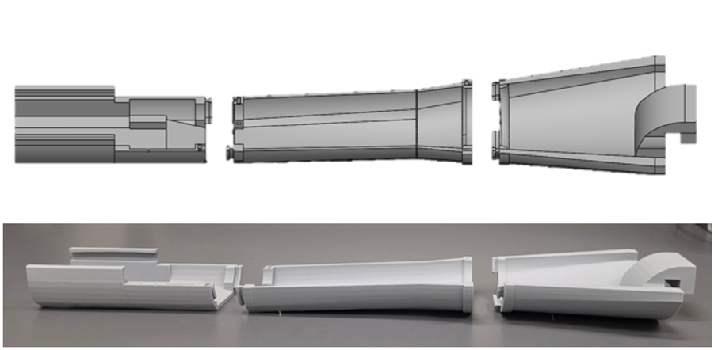
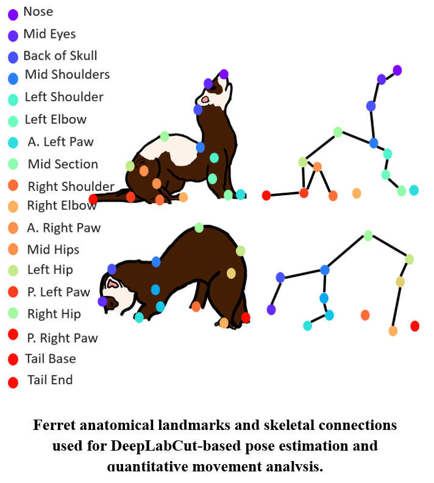
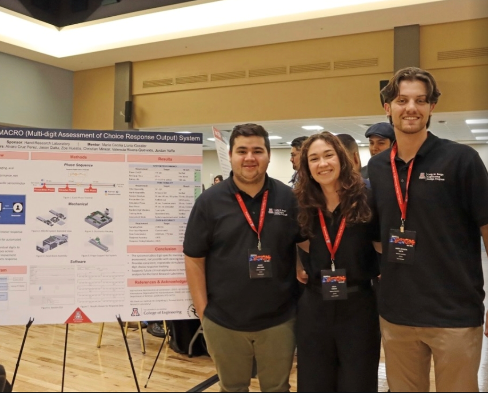
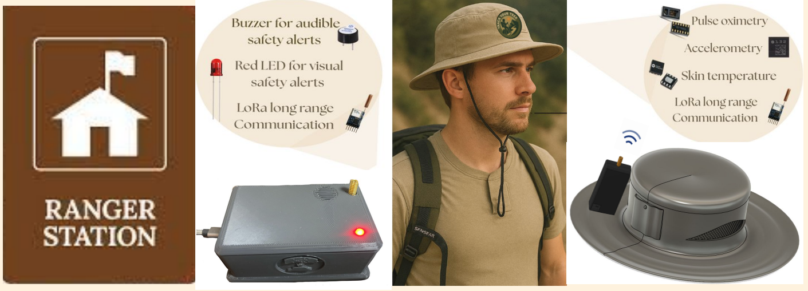
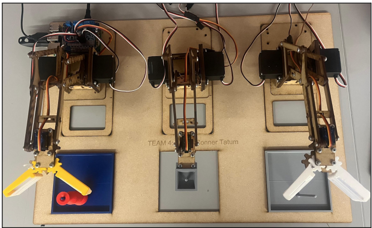
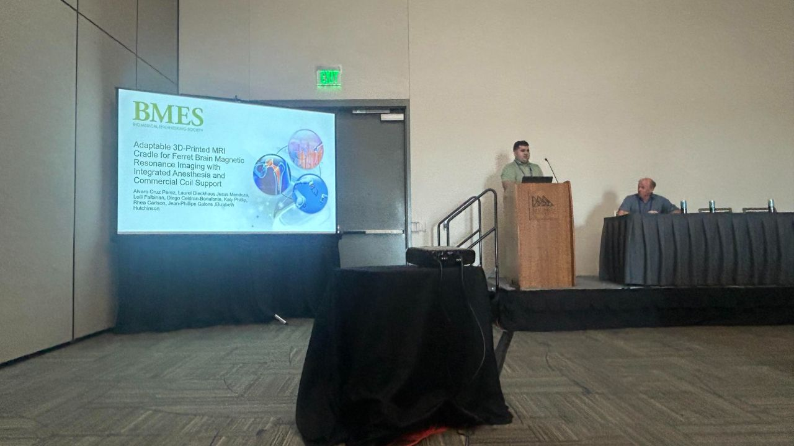
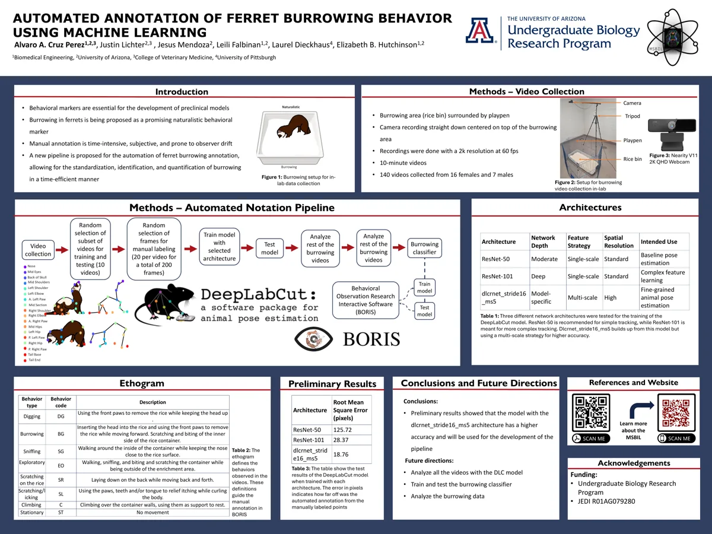
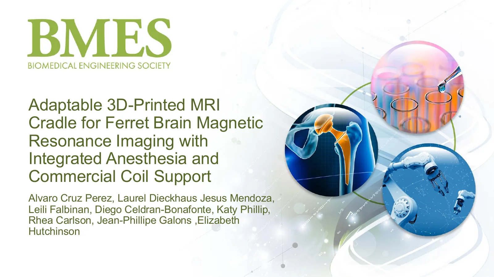
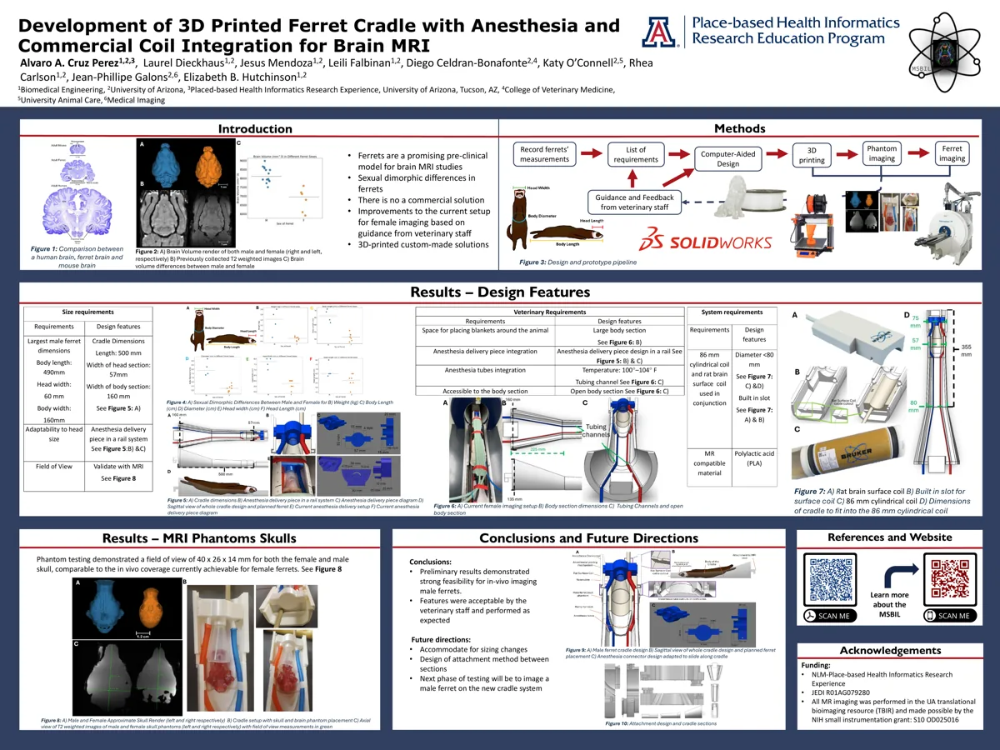
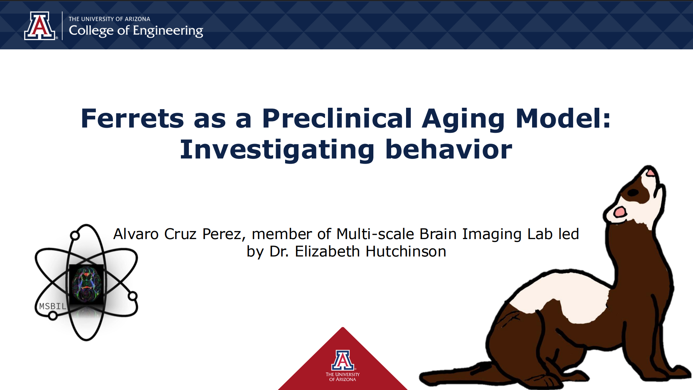

Mechanical design
SolidWorks, assemblies, adjustable mechanisms, engineering drawings, 3D printing, and design iteration.
I am Alvaro Alejandro Cruz Perez, a biomedical engineer and University of Arizona accelerated M.S. candidate. I develop practical systems for medical-device applications, preclinical imaging, biomechanics, and research, combining experience in mechanical design, sensing, prototyping, testing, and quantitative analysis.
I approach complex projects with curiosity, adaptability, collaboration, and ownership, working through uncertainty, communicating across disciplines, and iterating toward practical solutions.
SolidWorks, assemblies, adjustable mechanisms, engineering drawings, 3D printing, and design iteration.
Sensors, actuators, ESP32-based hardware, PCB exposure, soldering, subsystem integration, and troubleshooting.
Preclinical MRI, experimental design, DeepLabCut, Python, kinematics, MATLAB, and repeatable data-analysis workflows.
Selected coursework supporting my development as a multidisciplinary biomedical engineer, with training across medical devices, instrumentation, biomechanics, imaging, data analysis, biomaterials, and tissue engineering.
Applied engineering design principles to medical technologies, including needs identification, requirements development, prototyping, and design evaluation.
Studied biomedical measurement systems, sensors, signal acquisition, and instrumentation used to capture physiological and biological data.
Applied mechanics and engineering analysis to biological systems, including forces, motion, and mechanical behavior.
Explored sensing technologies, feedback systems, and control methods for measuring and regulating engineering systems.
Studied physical and computational principles of biomedical imaging and methods for extracting information from biological structures and processes.
Applied statistical methods to biomedical data, including hypothesis testing, experimental analysis, and quantitative interpretation.
Examined the properties and biomedical applications of biological and synthetic materials.
Studied interactions between biomaterials, cells, tissues, and the immune system, including biocompatibility and tissue response.
Explored bioprinting methods, biomaterials, cell-based fabrication, and design considerations for engineered tissue constructs.
Developed engineering solutions through iterative design, programming, prototyping, testing, teamwork, and system integration.
These projects show different parts of the same engineering process: define the real need, build around constraints, test the system, learn from failure, and improve the next iteration.
Engineering projects developed through laboratory research, experimental workflows, and ongoing investigation.

A 3D-printed positioning system for live-animal 7T brain MRI, developed from veterinary and imaging-user needs through CAD, prototyping, and in-scanner validation.
Engineering focus: constrained design, research instrumentation, usability, and validation.
Read more →
A DeepLabCut and Python workflow for converting multi-camera video into repeatable locomotion and kinematic measurements across subjects and timepoints.
Engineering focus: pose estimation, filtering, step and stride detection, joint kinematics, and validation.
Read more →Course and capstone projects focused on developing, integrating, and evaluating engineering solutions.

Mechanical lead for an adjustable hand-assessment system combining repeatable digit positioning, tactile stimulation, force sensing, and embedded control.
Engineering focus: mechanisms, ergonomics, system integration, assembly, and design leadership.
Read more →
A PEGDA raft and rudder concept designed to translate skeletal-muscle actuation into controlled swimming motion under constrained laboratory conditions.
Engineering focus: CAD, simulation, additive manufacturing, biomaterials, and muscle-actuator integration.
Read more →
A heat-illness monitoring concept for hikers combining heart-rate sensing, motion data, temperature sensing, LoRa communication, custom PCBs, alerts, and a simple monitoring interface.
Engineering focus: sensor integration, debugging, testability, and subsystem bring-up.
Read more →
A three-arm robotic transfer system built for a design competition, integrating Python control, iterative 3D-printed interfaces, custom gripping concepts, and coordinated motion between Me-Arms.
Engineering focus: programming, rapid prototyping, mechanism iteration, and mechanical-software integration.
Read more →My research experience has expanded my engineering skill set beyond design and prototyping to include experimental planning, validation, data analysis, literature review, and technical communication. At the Multi-Scale Brain Imaging Lab, I contribute to a research group using ferrets as a preclinical model in studies involving MRI, behavioral analysis, and biomechanics. I have applied my engineering skills to support the development of research tools, experimental workflows, and analysis methods while learning how to conduct rigorous research and communicate technical findings. I currently combine technical project ownership with day-to-day coordination of the ferret research team.
During the summer of 2024, I participated in the Place-based Health Informatics Research Experience (PHIRE), where I joined the Multi-Scale Brain Imaging Lab. Over the 12-week program, I received research training from experts in biomedical and healthcare research while gaining hands-on experience in experimental work, technical communication, and scientific presentation. I presented my work at the PHIRE Retreat Day and the 36th Annual Undergraduate Biology Research Program (UBRP) Conference in January 2026. Following PHIRE, I continued working in the lab as a paid research assistant throughout the academic year, taking on greater responsibility and continuing to develop my engineering and research skills. The following summer, I participated in UBRP(Undergraduate Biology Research Program) while continuing my work in the lab and presented my research at the 37th Annual UBRP Conference in January 2026. As part of my research experience, I also presented this work at the 2025 Biomedical Engineering Society (BMES) Annual Meeting, expanding my experience communicating research to a broader biomedical engineering audience.
CITI Program: Biomedical Research Investigators (expires Feb 2029) | Responsible Conduct of Research-Basic (expires May 2027) | Working with the IACUC-Investigators, Staff and Students University of Arizona: Science Communication-Undergraduate Biology Research | Research Readiness

Translate scanner, coil, animal-handling, research-workflow, and user needs into technical constraints.
Iterate in CAD, fabricate components, and test them in the environment where the system will actually be used.
Use imaging, video, and computational workflows to quantify performance, expose failure modes, and guide the next iteration.
Create oral, written, and visual content to communicate research findings to different audiences.

Cruz Perez AA, Lichter J, Mendoza J, Falbinan L, Dieckhaus L, Hutchinson EB. 37th Undergraduate Biology Research Program Conference, Tucson, AZ.

Cruz Perez AA et al. 2025 Biomedical Engineering Society Annual Meeting, San Diego, CA.

Cruz Perez A, Dieckhaus L, Mendoza J, Falbinan L, Celdran-Bonafonte D, O'Connell K, Carlson R, Galons JP, Hutchinson EB. 13th Annual Biomedical Engineering Day, Tucson, AZ.

Cruz Perez A, Mendoza J, Dieckhaus LA, Falbinan L, Hutchinson EB. PHIRE Retreat Day, Tucson, AZ.
Dieckhaus L, Cruz A, Falbinan L, Mendoza J, Carlson R, Celdran-Bonafonte D, O'Connell K, Galons JP, Hutchinson E. ISMRM, Honolulu, HI.
I am a Biomedical Engineering graduate from the University of Arizona and am currently pursuing an accelerated M.S. in Biomedical Engineering, expected in May 2027. I also work as a Research Assistant in Dr. Elizabeth Hutchinson’s Multi-Scale Brain Imaging Lab, where I apply mechanical design, prototyping, programming, and data analysis to support biomedical research.
My experience has taught me how to move from an initial research or user need to a functional prototype through requirements development, CAD design, rapid prototyping, testing, troubleshooting, and design refinement.
My technical skills include SolidWorks, 3D printing, Python, MATLAB, DeepLabCut, PCB design, electronics assembly, and experimental testing. I am seeking medical-device R&D opportunities involving mechanical design, rapid prototyping, systems integration, and product verification and validation. My interests include medical devices, mechanical design, biomechanics, robotics, research instrumentation, manufacturing, and tissue-engineered technologies.